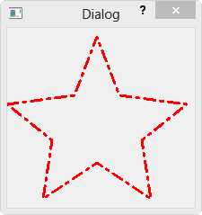

Hackathon notes
Java Graphics
- The paint component
- The Graphics object
- Coordinates
- Colours
- Fonts
- Shapes
QT
- Pointers& References New keyword
- Multifile
- Basic Window
- Signals and slots
- Qtimer
- Graphics
Java topics
The paint component
- The ability to draw in a window is provided by the polymorphic paintComponent method provided by the JPanel class.
public void paintComponent(Graphics g){}
- To draw on the screen you will need to subclass the JPanel class and override the paintComponent method.
The Graphics object
- To do any drawing at all in Java, you need a graphics context.
- A graphics context is a class in the class java.awt.Graphics package.
- The class has methods for drawing such as shapes, images, and text.
- The Graphics class is abstract , therefore it cannot be directly created using new.
- Instead we get it from a context when the paintComponent() method of a component is overriden when we inherit from a drawable component
- Another way to get a graphics handle is to call getGraphics() method of a component.
- This method returns a graphics context that can be used for drawing on the component outside its paintComponent() method.
- The recommendation is to use the first method
- If one uses the getGraphics() method, you should also call g.dispose() when finished using it.
- This releases any operating system resources that might be held by the graphics context.
Coordinates
- The screen of a computer is a grid of little squares called pixels.
- The color of each pixel can be set individually, and drawing on the screen just means setting the colors of individual pixels.
!Pasted image 20220810044440.png - A graphics context draws in a rectangle made up of pixels.
- A position in the rectangle is specified by a pair of integer coordinates, (x,y).
- The upper left corner has coordinates (0,0). The x coordinate increases from left to right, and the y coordinate increases from top to bottom.
- The illustration shows a 20-pixel by 12-pixel component (with very large pixels).
- A small line, rectangle, and oval are shown as they would be drawn by coloring individual pixels.
- For any component, you can find out the size of the rectangle that it occupies by calling the instance methods getWidth() and getHeight(), which return the number of pixels in the horizontal and vertical directions, respectively.
- In general, it's not a good idea to assume that you know the size of a component, since the size is often set by a layout manager and can even change if the component is in a window and that window is resized by the user. This means that it's good form to check the size of a component before doing any drawing on that component. For example, you can use a paintComponent() method that looks like:
{kind=link}
public void paintComponent(Graphics g) { super.paintComponent(g); int width = getWidth(); // Find out the width of this component. int height = getHeight(); // Find out its height. . . . // Draw the content of the component. }
Colours
You will probably want to use some color when you draw. Java is designed to work with the RGB color system. An RGB color is specified by three numbers that give the level of red, green, and blue, respectively, in the color. A color in Java is an object of the class, java.awt.Color. You can construct a new color by specifying its red, blue, and green components. For example,
Color myColor = new Color(r,g,b);
There are two constructors that you can call in this way. In the one that I almost always use, r, g, and b are integers in the range 0 to 255. In the other, they are numbers of type float in the range 0.0F to 1.0F. (Recall that a literal of type float is written with an "F" to distinguish it from a double number.) Often, you can avoid constructing new colors altogether, since the Color class defines several named constants representing common colors: Color.WHITE, Color.BLACK, Color.RED, Color.GREEN, Color.BLUE, Color.CYAN, Color.MAGENTA, Color.YELLOW, Color.PINK, Color.ORANGE, Color.LIGHT_GRAY, Color.GRAY, and Color.DARK_GRAY. (There are older, alternative names for these constants that use lower case rather than upper case constants, such as Color.red instead of Color.RED, but the upper case versions are preferred because they follow the convention that constant names should be upper case.)
An alternative to RGB is the HSB color system. In the HSB system, a color is specified by three numbers called the hue, the saturation, and the brightness. The hue is the basic color, ranging from red through orange through all the other colors of the rainbow. The brightness is pretty much what it sounds like. A fully saturated color is a pure color tone. Decreasing the saturation is like mixing white or gray paint into the pure color. In Java, the hue, saturation and brightness are always specified by values of type float in the range from 0.0F to 1.0F. The Color class has a static member function named getHSBColor for creating HSB colors. To create the color with HSB values given by h, s, and b, you can say:
Color myColor = Color.getHSBColor(h,s,b);
For example, to make a color with a random hue that is as bright and as saturated as possible, you could use:
Color randomColor = Color.getHSBColor( (float)Math.random(), 1.0F, 1.0F );
The type cast is necessary because the value returned by Math.random() is of type double, and Color.getHSBColor() requires values of type float. (By the way, you might ask why RGB colors are created using a constructor while HSB colors are created using a static member function. The problem is that we would need two different constructors, both of them with three parameters of type float. Unfortunately, this is impossible. You can have two constructors only if the number of parameters or the parameter types differ.)
The RGB system and the HSB system are just different ways of describing the same set of colors. It is possible to translate between one system and the other. The best way to understand the color systems is to experiment with them. (The sample program SimpleColorChooser.java lets you do that. You won't understand the source code at this time, but you can run it to play with color selection or to find the RGB or HSB values for the color that want.)
One of the properties of a Graphics object is the current drawing color, which is used for all drawing of shapes and text. If g is a graphics context, you can change the current drawing color for g using the method g.setColor(c), where c is a Color. For example, if you want to draw in green, you would just say g.setColor(Color.GREEN) before doing the drawing. The graphics context continues to use the color until you explicitly change it with another setColor() command. If you want to know what the current drawing color is, you can call the function g.getColor(), which returns an object of type Color. This can be useful if you want to change to another drawing color temporarily and then restore the previous drawing color.
Every component has an associated foreground color and background color. Generally, the component is filled with the background color before anything else is drawn (although some components are "transparent," meaning that the background color is ignored). When a new graphics context is created for a component, the current drawing color is set to the foreground color. Note that the foreground color and background color are properties of the component, not of a graphics context.
The foreground and background colors of a component can be set by calling instance methods component.setForeground(color) and component.setBackground(color), which are defined in the Component class and therefore are available for use with any component. This can be useful even for standard components, if you want them to use colors that are different from the defaults.
Fonts
A font represents a particular size and style of text. The same character will appear different in different fonts. In Java, a font is characterized by a font name, a style, and a size. The available font names are system dependent, but you can always use the following four strings as font names: "Serif", "SansSerif", "Monospaced", and "Dialog". (A "serif" is a little decoration on a character, such as a short horizontal line at the bottom of the letter i. "SansSerif" means "without serifs." "Monospaced" means that all the characters in the font have the same width. The "Dialog" font is the one that is typically used in dialog boxes.)
The style of a font is specified using named constants that are defined in the Font class. You can specify the style as one of the four values:
- Font.PLAIN,
- Font.ITALIC,
- Font.BOLD, or
- Font.BOLD + Font.ITALIC.
The size of a font is an integer. Size typically ranges from about 9 to 36, although larger sizes can also be used. The size of a font is usually about equal to the height of the largest characters in the font, in pixels, but this is not an exact rule. The size of the default font is 12.
Java uses the class named java.awt.Font for representing fonts. You can construct a new font by specifying its font name, style, and size in a constructor:
Font plainFont = new Font("Serif", Font.PLAIN, 12);
Font bigBoldFont = new Font("SansSerif", Font.BOLD, 24);
Every graphics context has a current font, which is used for drawing text. You can change the current font with the setFont() method. For example, if g is a graphics context and bigBoldFont is a font, then the command g.setFont(bigBoldFont) will set the current font of g to bigBoldFont. The new font will be used for any text that is drawn after the setFont() command is given. You can find out the current font of g by calling the method g.getFont(), which returns an object of type Font.
Every component also has an associated font. It can be set with the instance method component.setFont(font), which is defined in the Component class. When a graphics context is created for drawing on a component, the graphic context's current font is set equal to the font of the component.
Shapes
The Graphics class includes a large number of instance methods for drawing various shapes, such as lines, rectangles, and ovals. The shapes are specified using the (x,y) coordinate system described above. They are drawn in the current drawing color of the graphics context. The current drawing color is set to the foreground color of the component when the graphics context is created, but it can be changed at any time using the setColor() method.
Some drawing methods were already listed in Subsection 3.9.1. Here, I describe those methods in more detail and add a few more. With all these commands, any drawing that is done outside the boundaries of the component is ignored. Note that all these methods are in the Graphics class, so they all must be called through an object of type Graphics. It is shown here as g, but of course the name of the graphics context is up to the programmer.
- g.drawString(String str, int x, int y) -- Draws the text given by the string str. The string is drawn using the current color and font of the graphics context. x specifies the x-coordinate of the left end of the string. y is the y-coordinate of the baseline of the string. The baseline is a horizontal line on which the characters rest. Some parts of the characters, such as the tail on a y or g, extend below the baseline.
- g.drawLine(int x1, int y1, int x2, int y2) -- Draws a line from the point (x1,y1) to the point (x2,y2). The line is drawn as if with a pen that extends one pixel to the right and one pixel down from the (x,y) point where the pen is located. For example, if g refers to an object of type Graphics, then the command g.drawLine(x,y,x,y), which corresponds to putting the pen down at a point, colors the single pixel with upper left corner at the point (x,y). Remember that coordinates really refer to the lines between the pixels.
- g.drawRect(int x, int y, int width, int height) -- Draws the outline of a rectangle. The upper left corner is at (x,y), and the width and height of the rectangle are as specified. If width equals height, then the rectangle is a square. If the width or the height is negative, then nothing is drawn. The rectangle is drawn with the same pen that is used for drawLine(). This means that the actual width of the rectangle as drawn is width+1, and similarly for the height. There is an extra pixel along the right edge and the bottom edge. For example, if you want to draw a rectangle around the edges of the component, you can say "g.drawRect(0, 0, getWidth()-1, getHeight()-1);". If you use "g.drawRect(0, 0, getWidth(), getHeight());", then the right and bottom edges of the rectangle will be drawn outside the component and will not appear on the screen.
- g.drawOval(int x, int y, int width, int height) -- Draws the outline of an oval. The oval is one that just fits inside the rectangle specified by x, y, width, and height. If width equals height, the oval is a circle.
- g.drawRoundRect(int x, int y, int width, int height, int xdiam, int ydiam) -- Draws the outline of a rectangle with rounded corners. The basic rectangle is specified by x, y, width, and height, but the corners are rounded. The degree of rounding is given by xdiam and ydiam. The corners are arcs of an ellipse with horizontal diameter xdiam and vertical diameter ydiam. A typical value for xdiam and ydiam is 16, but the value used should really depend on how big the rectangle is.
- g.draw3DRect(int x, int y, int width, int height, boolean raised) -- Draws the outline of a rectangle that is supposed to have a three-dimensional effect, as if it is raised from the screen or pushed into the screen. The basic rectangle is specified by x, y, width, and height. The raised parameter tells whether the rectangle seems to be raised from the screen or pushed into it. The 3D effect is achieved by using brighter and darker versions of the drawing color for different edges of the rectangle. The documentation recommends setting the drawing color equal to the background color before using this method. The effect won't work well for some colors.
- g.drawArc(int x, int y, int width, int height, int startAngle, int arcAngle) -- Draws part of the oval that just fits inside the rectangle specified by x, y, width, and height. The part drawn is an arc that extends arcAngle degrees from a starting angle at startAngle degrees. Angles are measured with 0 degrees at the 3 o'clock position (the positive direction of the horizontal axis). Positive angles are measured counterclockwise from zero, and negative angles are measured clockwise. To get an arc of a circle, make sure that width is equal to height.
- g.fillRect(int x, int y, int width, int height) -- Draws a filled-in rectangle. This fills in the interior of the rectangle that would be drawn by drawRect(x,y,width,height). The extra pixel along the bottom and right edges is not included. The width and height parameters give the exact width and height of the rectangle. For example, if you wanted to fill in the entire component, you could say "g.fillRect(0, 0, getWidth(), getHeight());"
- g.fillOval(int x, int y, int width, int height) -- Draws a filled-in oval.
- g.fillRoundRect(int x, int y, int width, int height, int xdiam, int ydiam) -- Draws a filled-in rounded rectangle.
- g.fill3DRect(int x, int y, int width, int height, boolean raised) -- Draws a filled-in three-dimensional rectangle.
- g.fillArc(int x, int y, int width, int height, int startAngle, int arcAngle) -- Draw a filled-in arc. This looks like a wedge of pie, whose crust is the arc that would be drawn by the drawArc method.
QT topics
Pointers& References New keyword
- Variable types
- Value types
- Reference types
- Memory types
- Code space
- Stack
- Heap
- Register
- Uses of Pointers
- Pass-by-reference
- Uses of References
Multifile
- What include does
- Back to function definition
- Using a header file
Basic Window
File->New File or Project...
Applications->Qt Console Application->Choose...

#include <QCoreApplication> int main(int argc, char *argv[]) { QCoreApplication a(argc, argv); return a.exec(); }
The QCoreApplication class provides an event loop for console Qt applications. This class is used by non-GUI applications to provide their event loop. For non-GUI application that uses Qt, there should be exactly one QCoreApplication object. For GUI applications, we will use QApplication.
When calling a.exec() the event loop is launched.
Let's compile this application. By clicking on the green arrow on the bottom left, Qt Creator will compile and execute it. And what happened ? The application seems to be launched and not responding. It is actually normal. The event loop is running and waiting for events such as mouse click, but we did not provide any event to be processed, so it will run indefinitely.
When we compile the project, behind the scene, our Qt app is compiled in the following steps:
- qmake parses the .pro file, and generates makefile.
- The program is build using make (jom on windows).
Let's print out "Hello World" by modifying the source:
#include <QCoreApplication> #include <QDebug> int main(int argc, char *argv[]) { QCoreApplication a(argc, argv); qDebug() << "Hello World"; return a.exec(); }
Signals and slots
File->New File or Project...
Applications->Qt Gui Application->Choose...
We keep the class as MainWindow as given by default.
Next->Finish
Let's open up Forms by double-clicking the mainwindow.ui to put gui components:
From the Widgets, drag Horizontal Slider and Progress Bar, and place them into the main window. Then,
Run the code. Now, if we move the slider, the progress will reflect the changes in the slider:
We did it via gui, but we can do it via direct programming.
Let's delete the signal and slot, and write the code for the signal and slot mechanism in the constructor of the MainWindow class as shown below:
#include "mainwindow.h" #include "ui_mainwindow.h" MainWindow::MainWindow(QWidget *parent) : QMainWindow(parent), ui(new Ui::MainWindow) { ui->setupUi(this); connect(ui->horizontalSlider, SIGNAL(valueChanged(int)), ui->progressBar, SLOT(setValue(int))); } MainWindow::~MainWindow() { delete ui; }
Signal and Slot
Signals and slots are used for communication between objects. The signals and slots mechanism is a central feature of Qt and probably the part that differs most from the features provided by other frameworks.
In GUI programming, when we change one widget, we often want another widget to be notified. More generally, we want objects of any kind to be able to communicate with one another. For example, if a user clicks a Close button, we probably want the window's close() function to be called. Older toolkits achieve this kind of communication using callbacks. A callback is a pointer to a function, so if you want a processing function to notify you about some event you pass a pointer to another function (the callback) to the processing function. The processing function then calls the callback when appropriate. Callbacks have two fundamental flaws: Firstly, they are not type-safe. We can never be certain that the processing function will call the callback with the correct arguments. Secondly, the callback is strongly coupled to the processing function since the processing function must know which callback to call.
In Qt, we have an alternative to the callback technique: We use signals and slots. A signal is emitted when a particular event occurs. Qt's widgets have many predefined signals, but we can always subclass widgets to add our own signals to them. A slot is a function that is called in response to a particular signal. Qt's widgets have many pre-defined slots, but it is common practice to subclass widgets and add your own slots so that you can handle the signals that you are interested in.
The signals and slots mechanism is type safe: The signature of a signal must match the signature of the receiving slot. (In fact a slot may have a shorter signature than the signal it receives because it can ignore extra arguments.) Since the signatures are compatible, the compiler can help us detect type mismatches. Signals and slots are loosely coupled: A class which emits a signal neither knows nor cares which slots receive the signal. Qt's signals and slots mechanism ensures that if you connect a signal to a slot, the slot will be called with the signal's parameters at the right time. Signals and slots can take any number of arguments of any type. They are completely type safe.
All classes that inherit from QObject or one of its subclasses (e.g., QWidget) can contain signals and slots. Signals are emitted by objects when they change their state in a way that may be interesting to other objects. This is all the object does to communicate. It does not know or care whether anything is receiving the signals it emits. This is true information encapsulation, and ensures that the object can be used as a software component.
Slots can be used for receiving signals, but they are also normal member functions. Just as an object does not know if anything receives its signals, a slot does not know if it has any signals connected to it. This ensures that truly independent components can be created with Qt. You can connect as many signals as you want to a single slot, and a signal can be connected to as many slots as you need. It is even possible to connect a signal directly to another signal. (This will emit the second signal immediately whenever the first is emitted.)
QPainter
In this tutorial, we will learn QPainter.
The common use of QPainter is inside a widget's paint event: Construct and customize (e.g. set the pen or the brush) the painter. QPainter provides highly optimized functions to do most of the drawing GUI programs require. It can draw everything from simple lines to complex shapes like pies and chords. It can also draw aligned text and pixmaps.
Qt->Qt Gui Application:
By reimplementing QWidget::paintEvent(), we can create customized widgets and have complete control over their appearance.
Here is the modified painterdialog.h:
// painterdialog.h #ifndef PAINTERDIALOG_H #define PAINTERDIALOG_H #include <QDialog> #include <QPainter> namespace Ui { class PainterDialog; } class PainterDialog : public QDialog { Q_OBJECT public: explicit PainterDialog(QWidget *parent = 0); ~PainterDialog(); private: Ui::PainterDialog *ui; protected: void paintEvent(QPaintEvent *e); }; #endif // PAINTERDIALOG_H Here, we're going to reimplement **paintEvent()**. Here is the implementation file, **painterdialog.cpp**: #include "painterdialog.h" #include "ui_painterdialog.h" PainterDialog::PainterDialog(QWidget *parent) : QDialog(parent), ui(new Ui::PainterDialog) { ui->setupUi(this); } PainterDialog::~PainterDialog() { delete ui; } void PainterDialog:: paintEvent(QPaintEvent *e) { QPainter painter(this); painter.setPen(Qt::blue); painter.setFont(QFont("Arial", 80)); painter.drawText(rect(), Qt::AlignCenter, "Qt"); } In the **paintEvent()**, we created QPainter object. Then, we the pen color, font type, font size, and the text itself with alignment. If we run the code, we get: 
QPainter - Line Drawing
We can draws a line as well as points. Here we reimplemented the paintEvent() again:
void PainterDialog:: paintEvent(QPaintEvent *e) { QPainter MyPainter(this); QPen PointPen(Qt::red); PointPen.setWidth(5); QPen LinePen(Qt::green); LinePen.setWidth(2); QPoint p1; p1.setX(100); p1.setY(100); QPoint p2; p2.setX(300); p2.setY(200); MyPainter.setPen(PointPen); MyPainter.drawPoint(p1); MyPainter.drawPoint(p2); MyPainter.setPen(LinePen); MyPainter.drawLine(p1, p2); QPen LinePen2(Qt::black); LinePen2.setStyle( Qt::DashDotLine ); LinePen2.setWidth(3); MyPainter.setPen(LinePen2); MyPainter.drawLine(QPoint(300,100), QPoint(100,200)); }
Run the code, then we will have:
QTimer
In this tutorial, we will learn about QTimer.
The QTimer class provides repetitive and single-shot timers.
The QTimer class provides a high-level programming interface for timers. To use it, create a QTimer, connect its timeout() signal to the appropriate slots, and call start(). From then on, it will emit the timeout() signal at constant intervals.
In this example, we'll use Qt Console application.
We need to create a MyTimer class:
Here are the codes:
**mytimer.h**: #ifndef MYTIMER_H #define MYTIMER_H #include <QTimer> class MyTimer : public QObject { Q_OBJECT public: MyTimer(); QTimer *timer; public slots: void MyTimerSlot(); }; #endif // MYTIMER_H
Note that MyTimer class is inherited from QObject. By inheriting from QObject, out class can use signal and slot mechanism Qt provides. Also, the macro Q_OBJECT set to make the MOC to function properly.
The MyTimerSlot() slot will be invoked when the timer signals timeout().
mytimer.cpp:
#include "mytimer.h" #include <QDebug> MyTimer::MyTimer() { // create a timer timer = new QTimer(this); // setup signal and slot connect(timer, SIGNAL(timeout()), this, SLOT(MyTimerSlot())); // msec timer->start(1000); } void MyTimer::MyTimerSlot() { qDebug() << "Timer..."; }
In the code, we creates QTimer object, and setup the signal and slot so that as soon as it the signal timeout() is emitted, our slot MyTimerSlot() prints out "Timer..." every seconds (1000ms).
void QTimer::start(int msec) starts or restarts the timer with a timeout interval of msec milliseconds. If the timer is already running, it will be stopped and restarted.
Finally, we need to make an instance of MyTimer class:
main.cpp:
#include <QCoreApplication> #include "mytimer.h" int main(int argc, char *argv[]) { QCoreApplication a(argc, argv); // Create MyTimer instance // QTimer object will be created in the MyTimer constructor MyTimer timer; return a.exec(); }
QBrush and QRect
In this tutorial, we will learn QBrush and QRect.
The QBrush class defines the fill pattern of shapes drawn by QPainter. A brush has a style, a color, a gradient and a texture.

A QRect can be constructed with a set of left, top, width and height integers:
QRect::QRect(int x, int y, int width, int height)
or from a QPoint and a QSize:
QRect::QRect(const QPoint & topLeft, const QSize & size)
The following code creates two identical rectangles.
QRect r1(100, 200, 11, 16); QRect r2(QPoint(100, 200), QSize(11, 16));
Qt->Qt Gui Application:
We will override QWidget::paintEvent() so that we can create customized widgets and have complete control over their appearance.
QRect
Here is the modified dialog.h:
// dialog.h #ifndef DIALOG_H #define DIALOG_H #include <QDialog> #include <QPainter> #include <QRect> #include <QBrush> namespace Ui { class Dialog; } class Dialog : public QDialog { Q_OBJECT public: explicit Dialog(QWidget *parent = 0); ~Dialog(); private: Ui::Dialog *ui; protected: void paintEvent(QPaintEvent *e); }; #endif // DIALOG_H Here, we're going to reimplement **paintEvent()**. Here is the implementation file, **dialog.cpp**: #include "dialog.h" #include "ui_dialog.h" Dialog::Dialog(QWidget *parent) : QDialog(parent), ui(new Ui::Dialog) { ui->setupUi(this); } Dialog::~Dialog() { delete ui; } void Dialog:: paintEvent(QPaintEvent *e) { QPainter painter(this); int left = 100; int top = 50; int width = 200; int height = 150; // r1 and r2 are same QRect r1(left, top, width, height); QRect r2(QPoint(left, top), QSize(width, height)); painter.setPen(Qt::blue); painter.drawRect(r1); // r1 as a bounding box painter.drawEllipse(r1); }
In the paintEvent(), we created QPainter object. Then, we constructed a rectangle in two ways, and draw the rectangle and an ellipse with the rectangle as a bounding box.
If we run the code, we get:
QBrush
We can use a QBrush.
Brushes do fill and Pens do outline.
Here we reimplemented the paintEvent() again:
void Dialog:: paintEvent(QPaintEvent *e) { QPainter painter(this); int left = 100; int top = 50; int width = 200; int height = 150; // r1 and r2 are same QRect r1(left, top, width, height); QRect r2(QPoint(left, top), QSize(width, height)); painter.setPen(Qt::blue); QBrush brush(Qt::red, Qt::CrossPattern); painter.drawRect(r1); painter.fillRect(r1, brush); // r1 as a bounding box painter.drawEllipse(r1); }
Run the code, then we will have:
QPainterPath and QPolygon
In this tutorial, we will learn QPainterPath and QPolygon.
The QPainterPath class provides a container for painting operations, enabling graphical shapes to be constructed and reused.
A painter path is an object composed of a number of graphical building blocks, such as rectangles, ellipses, lines, and curves. Building blocks can be joined in closed subpaths, for example as a rectangle or an ellipse. A closed path has coinciding start and end points. Or they can exist independently as unclosed subpaths, such as lines and curves.
Here is an example of PainterPath from Qt Doc Painter Paths Example .
OK. Let's make our own example.
Qt->Qt Gui Application:
We will override QWidget::paintEvent() so that we can create customized widgets and have complete control over their appearance.
QPolygon
Here is the modified dialog.h:
// dialog.h #ifndef DIALOG_H #define DIALOG_H #include <QDialog> #include <QPainter> #include <QPolygon> #include <QPainterPath> namespace Ui { class Dialog; } class Dialog : public QDialog { Q_OBJECT public: explicit Dialog(QWidget *parent = 0); ~Dialog(); private: Ui::Dialog *ui; protected: void paintEvent(QPaintEvent *e); }; #endif // DIALOG_H
Here, we're going to reimplement paintEvent().
Here is the implementation file, dialog.cpp:
#include "dialog.h" #include "ui_dialog.h" Dialog::Dialog(QWidget *parent) : QDialog(parent), ui(new Ui::Dialog) { ui->setupUi(this); } Dialog::~Dialog() { delete ui; } void Dialog:: paintEvent(QPaintEvent *e) { QPainter painter(this); QPolygon poly; poly << QPoint(0, 85) << QPoint(75, 75) << QPoint(100, 10) << QPoint(125, 75) << QPoint(200, 85) << QPoint(150, 125) << QPoint(160, 190) << QPoint(100, 150) << QPoint(40, 190) << QPoint(50, 125)\ << QPoint(0, 85); // QPen: style(), width(), brush(), capStyle() and joinStyle(). QPen pen(Qt::red, 3, Qt::DashDotLine, Qt::RoundCap, Qt::RoundJoin); painter.setPen(pen); painter.drawPolygon(poly); }
In the paintEvent(), we created QPolygon object, fill the points, and draw it using drawPolygon().
If we run the code, we get:

QPainterPath
We want the polygon filled.
Then, we may want to use a QBrush for filling and QPainterPath for polygon.
Here we reimplemented the paintEvent() again:
void Dialog:: paintEvent(QPaintEvent *e) { QPainter painter(this); QPolygon poly; poly << QPoint(0, 85) << QPoint(75, 75) << QPoint(100, 10) << QPoint(125, 75) << QPoint(200, 85) << QPoint(150, 125) << QPoint(160, 190) << QPoint(100, 150) << QPoint(40, 190) << QPoint(50, 125)\ << QPoint(0, 85); // style(), width(), brush(), capStyle() and joinStyle(). QPen pen(Qt::red, 3, Qt::DashDotLine, Qt::RoundCap, Qt::RoundJoin); painter.setPen(pen); // Brush QBrush brush; brush.setColor(Qt::green); brush.setStyle(Qt::SolidPattern); // Fill polygon QPainterPath path; path.addPolygon(poly); // Draw polygon painter.drawPolygon(poly); painter.fillPath(path, brush); } }
Run the code, then we will have a filled polygon!
Links
Threads
- QThreads - Introduction
- QThreads - Creating Threads
- Creating QThreads using QtConcurrent
- QThreads - Priority
- QThreads - QMutex
- QThreads - GuiThread
- QtConcurrent QProgressDialog with QFutureWatcher
- QSemaphores - Producer and Consumer
- QThreads - wait()
Graphics
- QPainter
- QBrush and QRect
- QPainterPath and QPolygon
- QPen and Cap Style
- QBrush and QGradient
- QPainter and Transformations
- QGraphicsView and QGraphicsScene
- Customizing Items by inheriting QGraphicsItem
- QGraphicsView Animation
Networking
- QHttp - Downloading Files
- QNetworkAccessManager and QNetworkRequest - Downloading Files
- Qt's Network Download Example - Reconstructed
- QNetworkAccessManager - Downloading Files with UI and QProgressDialog
- QUdpSocket
- QTcpSocket
- QTcpSocket with Signals and Slots
- QTcpServer - Client and Server
- QTcpServer - Loopback Dialog
- QTcpServer - Client and Server using MultiThreading
- QTcpServer - Client and Server using QThreadPool
- Asynchronous QTcpServer - Client and Server using QThreadPool
Additional - OpenGL